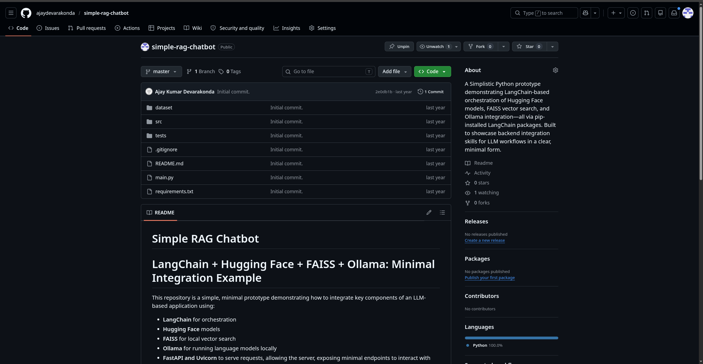
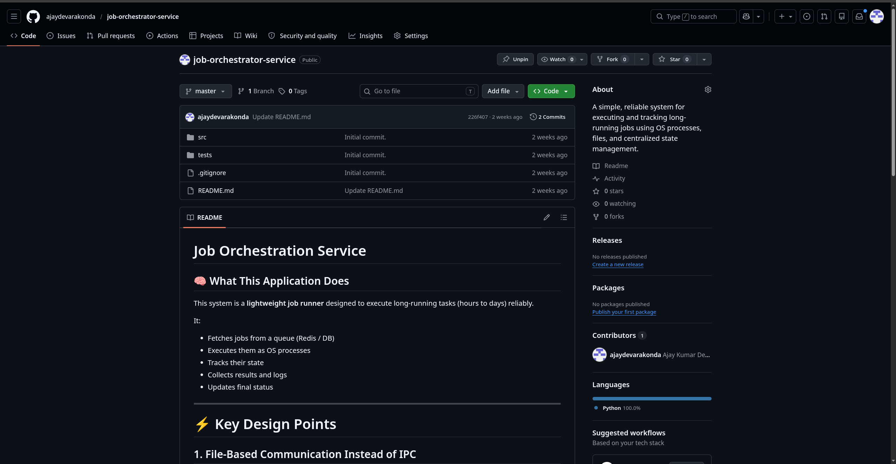

Simple RAG Chatbot
A minimal Python prototype showcasing LangChain, FAISS vector search, and Ollama integration — built to demonstrate backend LLM workflow skills.

Job Orchestration Service
A simple, reliable system for executing and tracking long-running jobs using OS processes, files, and centralized state management.

Digital signage player - dsplayer
Digital signage player as the name suggests is a digital signage application. Built to be run on a raspberry pi.